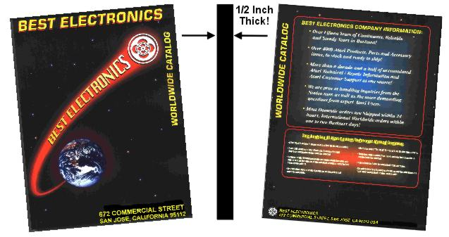

Article 1 We have over 5,000+ Atari items, Atari OEM Parts and Accessories in stock. Not all 5,000+ Atari items are listed on this Web site, only the more popular ones. Specializing in replacement parts and accessories for all Consumer based Atari Game Systems and Computers. If you can not find the exact Atari item you are looking for, Email us but LOOK HERE first!
Article 2 Find support for new or returning Best Atari Customers.How to order from Best Electronics.Payment methodsBest now accepts Google Pay payments! Get a copy of our 220-page Inventory Catalog. On THIS PAGE you’ll find the answers you’re looking for
Article 3 Our HALL OF FAME is a list of just some of the Custom made Atari replacement parts, upgrade Atari Parts, or Atari user installed upgrades Best Electronics has developed over the last 38 years in the Atari business for its Atari customers. All of the Best Atari items on this page have a click thru link to more information on that Best Atari product, and are in stock.
Article 4 One common Atari Question or E-Mail we get is “Do you really have that Atari part or Atari item in stock? I have checked the world wide Internet and you are the only one that lists it. I noticed that your that your Atari web page(s) have not been updated (bottom of each Best Web page has a last updated date) for weeks, months or years?” The Answer is here!